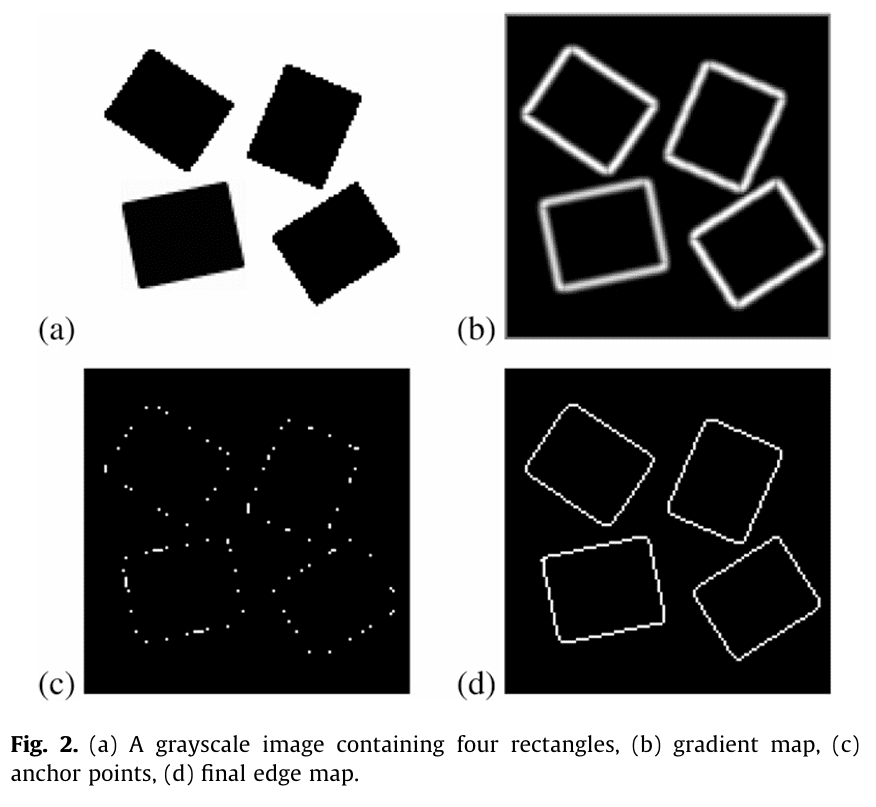
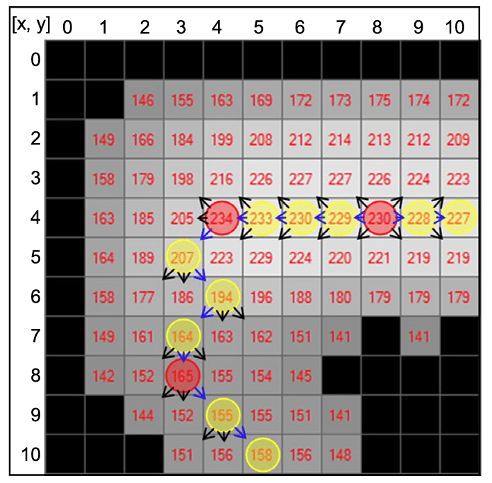
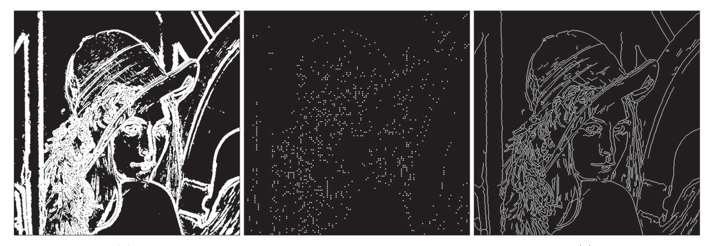

边缘检测方法：Edge Drawing
介绍一种边缘检测方法：Edge Drawing，来自以下文章，它可以在 OpenCV 中使用，具体用法在另一篇笔记中。
- Edge drawing: a combined real-time edge and segment detector
总体流程
总体逻辑先过一遍，先不纠结各个步骤具体是如何做的。
流程一：模糊图片，对图像求梯度，得到大小、方向，然后进行简单的分类，得到初始粗糙的边。
流程二：挑选出一些比较值得信任（即很有可能在边上）的像素，这些像素称为锚（anchor）。
流程三：从一个锚出发，逐步地去连接其他的锚点（连接方式先不谈）。

流程一：求解梯度并获取初始边
这一步太简单经典了。论文用的是 5x5 标准差为 1 的高斯模糊，梯度是 3x3 的 Sobel 算子，即 [[-1, 0, 1], [-2, 0, 2], [-1, 0, 1]] 这种形状。
横列方向都做一次梯度，梯度大小就是绝对值之和，方向这里是梯度方向转90度，梯度方向就是比较绝对值大小，横方向梯度大那就说明是竖线，作者在论文也说了两个方向就够用了。
此外，有一个梯度阈值，如果小于这个阈值，就说明这个点是平滑区域，后续计算直接忽略掉，这一部分的代码如下：
# 1\. Blur Image
blursize = 5
blursigma = 1.0
img = cv2.GaussianBlur(img, (blursize, blursize), blursigma)
# 2\. Compute Gradient
gradient_thresh = 36
dx = np.abs(cv2.Sobel(img, cv2.CV_64F, 1, 0, ksize=3))
dy = np.abs(cv2.Sobel(img, cv2.CV_64F, 0, 1, ksize=3))
Gradient_value = dx + dy
Gradient_direction = np.where(dx > dy, EDGE_VER, EDGE_HOR)
Gradient_direction[Gradient_value < gradient_thresh] = EDGE_IMPOSSIBLE
# For convenience, we add a one-pixel boundary around the entire structure.
Gradient_direction = np.pad(Gradient_direction, ((1, 1), (1, 1)), mode='constant', constant_values=EDGE_IMPOSSIBLE)
Gradient_value = np.pad(Gradient_value, ((1, 1), (1, 1)), mode='constant', constant_values=0)
上面代码的最后部分，我们在四周加了边界，方面后面的代码编写。这些边界和平滑区域一样，设置为 EDGE_IMPOSSIBLE，后续如果遍历到这些点就知道如何做了。
流程二：获取可靠的锚点
这一步是获取锚点，即我们认为一定在边上的一些点。这里其实很简单，就是拿梯度值和相邻的点比较，如果一个点上一步得到是水平边（上一步的方向不是梯度而是梯度转90度），想象一条黑白边，此时就要判断该点和上下的点的梯度值大小，如果大于一个阈值那么就认为该点在边上。
注意这里不要乱掉了，我一开始想当然了，认为检测出是水平边就应该和左右比，但其实应该和上下比，竖直边同理。
此外，这里不需要全部遍历，这个流程只是为了挑选出一些可靠点出来，论文默认横竖步长是 4，阈值（即该点大于比较的点多少）是 8。
# 3\. Get Anchor Points
anchor_thresh = 8
anchor_step = 4
anchors = []
# why from 2: 0 is the padding boundary, 1 is the real boundary, so we can compare neighbor from 2
for i in range(2, rows-2, anchor_step):
for j in range(2, cols-2, anchor_step):
isanchor = False
if Gradient_direction[i, j] == EDGE_HOR:
mask1 = Gradient_value[i, j] - Gradient_value[i-1, j] >= anchor_thresh
mask2 = Gradient_value[i, j] - Gradient_value[i+1, j] >= anchor_thresh
isanchor = mask1 and mask2
elif Gradient_direction[i, j] == EDGE_VER:
mask1 = Gradient_value[i, j] - Gradient_value[i, j-1] >= anchor_thresh
mask2 = Gradient_value[i, j] - Gradient_value[i, j+1] >= anchor_thresh
isanchor = mask1 and mask2
if isanchor:
anchors.append((i, j))
anchors = sorted(anchors, key=lambda x: Gradient_value[x[0], x[1]], reverse=True)
流程三：连接锚点
这里其实看下面的图就理解了，其实就梯度从大到小遍历所有的锚点，从每个锚点出发，去按照每个点计算的方向进行探索。

其实就是 DFS，只不过这里每次要看当前的点的方向，如果是横向就只能左右走，竖向就只能上下走。每次走的时候有三个选项，选择梯度最大的点。比如向左边走，就要比较左上、左中、左下三个点，选择梯度最大的点。遇到边界、平滑区域、访问过的点就停止。
代码如下，其实很简单：
# 4\. Trace Edges from anchors
visited = np.zeros((rows, cols), dtype=bool)
# Use DFS to trace from one anchor point to another anchor point
def visit(x, y):
global visited, edges
def getmaxG(p1, p2, p3):
G1, G2, G3 = Gradient_value[p1], Gradient_value[p2], Gradient_value[p3]
if G1 >= G2 and G1 >= G3:
return p1
elif G3 >= G2 and G3 >= G1:
return p3
else:
return p2
stacks = collections.deque([((x, y), None)])
while len(stacks) > 0:
nowp, fromdirection = stacks.pop()
nowx, nowy = nowp
if Gradient_direction[nowx, nowy] == EDGE_IMPOSSIBLE:
continue
if visited[nowx, nowy]:
continue
visited[nowx, nowy] = True
if Gradient_direction[nowx, nowy] == EDGE_HOR:
# Go Left
if fromdirection != 'RIGHT':
x1, y1 = nowx-1, nowy-1
x2, y2 = nowx, nowy-1
x3, y3 = nowx+1, nowy-1
newp = getmaxG((x1, y1), (x2, y2), (x3, y3))
stacks.append((newp, 'LEFT'))
# Go Right
if fromdirection != 'LEFT':
x1, y1 = nowx-1, nowy+1
x2, y2 = nowx, nowy+1
x3, y3 = nowx+1, nowy+1
newp = getmaxG((x1, y1), (x2, y2), (x3, y3))
stacks.append((newp, 'RIGHT'))
elif Gradient_direction[nowx, nowy] == EDGE_VER:
# Go Up
if fromdirection != 'DOWN':
x1, y1 = nowx-1, nowy-1
x2, y2 = nowx-1, nowy
x3, y3 = nowx-1, nowy+1
newp = getmaxG((x1, y1), (x2, y2), (x3, y3))
stacks.append((newp, 'UP'))
# Go Down
if fromdirection != 'UP':
x1, y1 = nowx+1, nowy-1
x2, y2 = nowx+1, nowy
x3, y3 = nowx+1, nowy+1
newp = getmaxG((x1, y1), (x2, y2), (x3, y3))
stacks.append((newp, 'DOWN'))
for anchorx, anchory in anchors:
if not visited[anchorx, anchory]:
visit(anchorx, anchory)
edges = np.zeros((rows, cols), dtype=np.uint8)
edges[visited] = 255
结果
